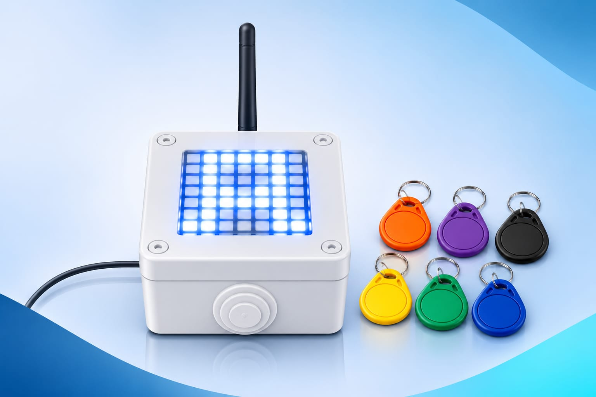
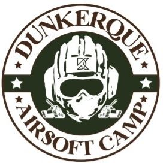
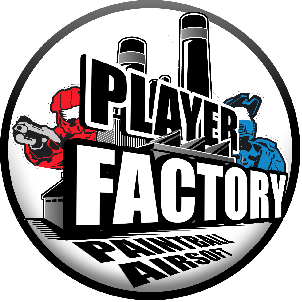
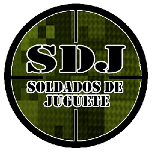

Els equips prenen zones
Els jugadors disputen els nodes distribuïts pel camp i n'alternen el control al llarg de la partida.
Dominion comptabilitza el temps de captura de diverses zones i el transforma en una puntuació en directe. Els equips veuen l'evolució de la partida mentre el personal del camp té una eina clara per coordinar-la.
Arenatec presenta Dominion com el primer panell de puntuació per a airsoft basat en el temps de captura de diverses zones.

Dominion transforma el control de zones en una competició visible per als equips i més fàcil de seguir per al personal del camp.
Els jugadors disputen els nodes distribuïts pel camp i n'alternen el control al llarg de la partida.
El sistema comptabilitza el temps de control de cada equip a través de les zones de joc.
El Score fa visible la situació acumulada perquè equips i organització segueixin el ritme del joc.
Dominion combina una pantalla de puntuacions, zones de captura i senyals lluminosos perquè l'estat del joc sigui visible al camp.

El panell de puntuacions mostra els equips i el seu progrés segons el temps de captura acumulat als nodes.

El Node correspon a una zona capturable del camp. Dominion permet configurar fins a setze zones.
La llum circular del Beacon indica visualment quin equip té capturat el node associat.

El Bomb S1 és un mòdul integrat de Dominion que simula un dispositiu bomba i compleix la funció d'un clauer RFID. Quan el compte enrere arriba a zero, activa una alarma acústica potent i captura un Node. Robusta, simple i pràctica, està pensada per a una partida que s'entén sense grans explicacions al briefing.
Dominion dona als equips una referència compartida de la partida i ajuda el personal a coordinar els moments de joc.






